26 ülke
26 ülkeAvrupa ve Orta Doğu
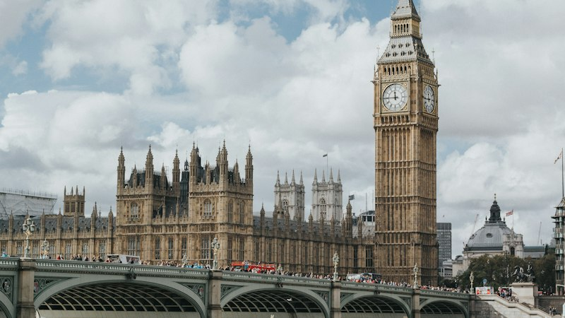
Birleşik Krallık'ta tam zamanlı lisans normalde üç yıl sürer; İskoçya'da onur derecesi dört yıldır.
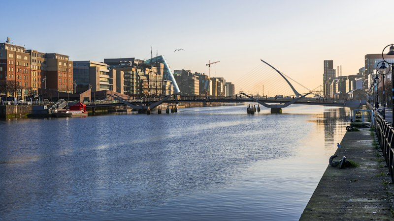
İrlanda'da eğitim dili İngilizcedir ve lisans genellikle 3 ile 4 yıl sürer.
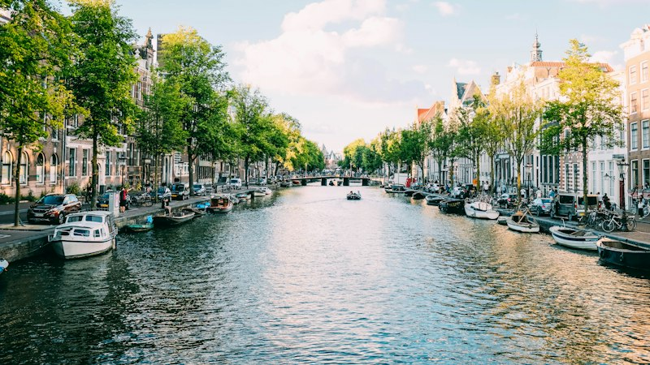
Hollanda'da araştırma üniversitesinde lisans 3 yıl, uygulamalı bilimler üniversitesinde (hogeschool) 4 yıl sürer.
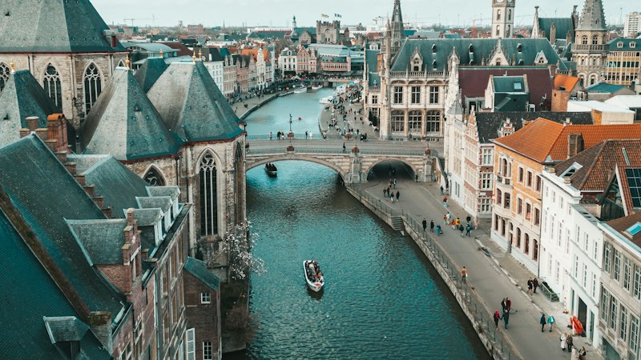
Belçika'da yükseköğretim dil topluluklarına göre düzenlenir; Flaman Topluluğu'nda programların çoğu Felemenkçedir.
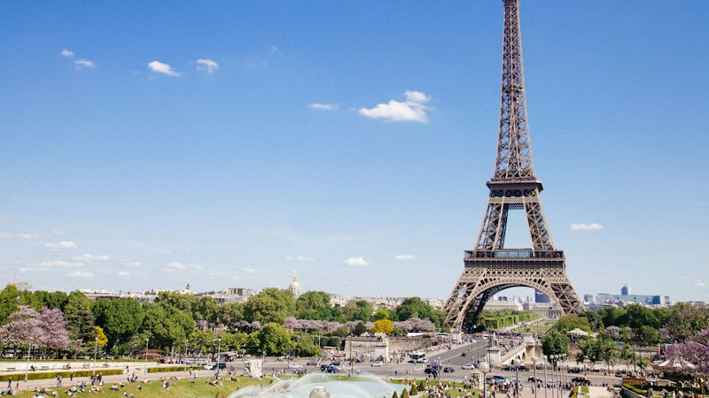
Fransa'da lisans (licence) üç yıl sürer.
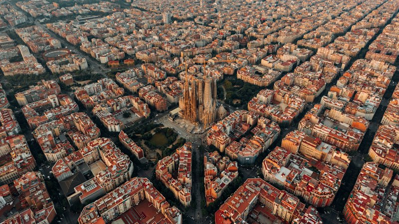
İspanya'da lisans 240 AKTS'dir; tam zamanlı okuyan öğrenci için dört yıl sürer.
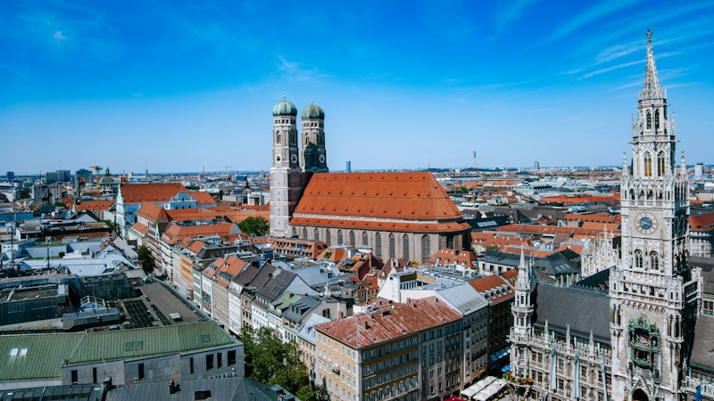
Almanya'da devlet üniversitelerinin çoğunda lisans için harç alınmaz; öğrenci her dönem katkı payı öder (2026/27 kış döneminde örneğin Hamburg'da 402 avro).
Avusturya'da Türk lise diploması tek başına üniversiteye giriş hakkı vermez; YKS'de en az 180 puan ve bir programa yerleşme istenir.
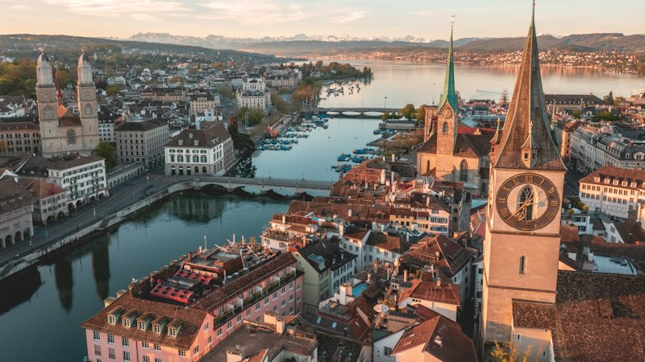
İsviçre'de merkezi bir başvuru sistemi yoktur; her üniversite kendi kabul şartlarını belirler.
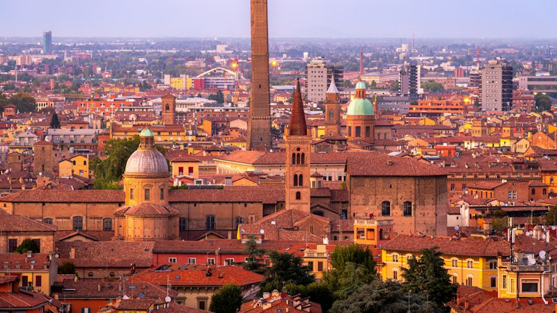
İtalya'da vize gereken öğrenci önce Universitaly portalında ön kayıt yapar, üniversite onaylayınca vizeye başvurur.
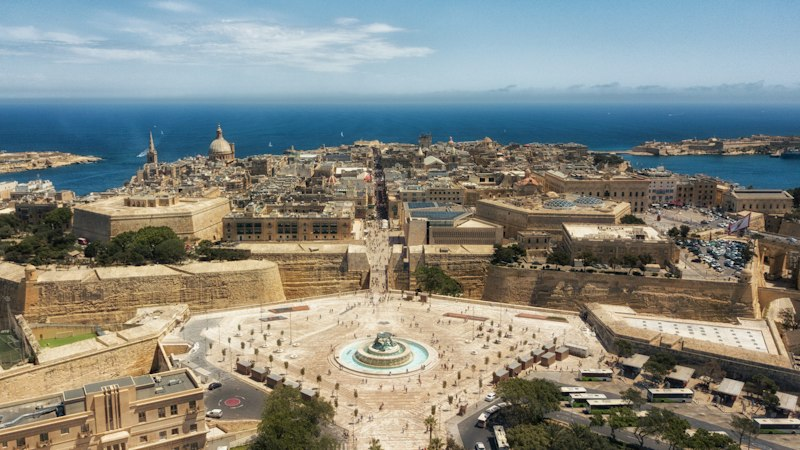
Malta'da İngilizce dil okulları ELT Council tarafından lisanslanır; 2026'da yayımlanan listede 33 lisanslı okul var.
Macaristan'da tıp, diş hekimliği ve eczacılık İngilizce okunabiliyor ve üniversiteler öğrenciyi kendi giriş sınavıyla seçiyor.
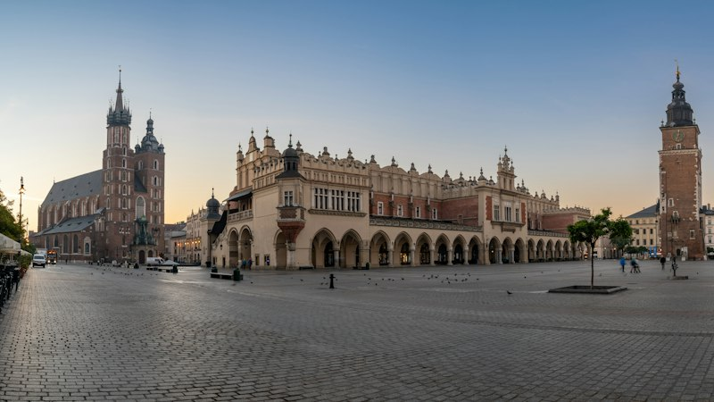
Polonya'da tıp, 6 yıllık İngilizce program olarak da okunabiliyor.
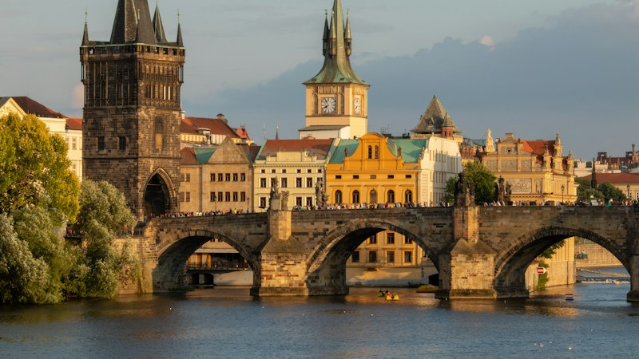
Çekya'da devlet üniversitelerinde Çekçe okuyan öğrenciden, uyruğu ne olursa olsun harç alınmaz.
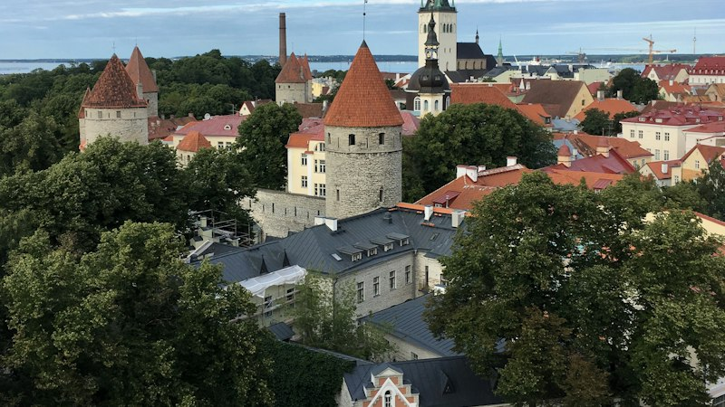
Estonya'da İngilizce programların büyük kısmı yüksek lisans düzeyinde.
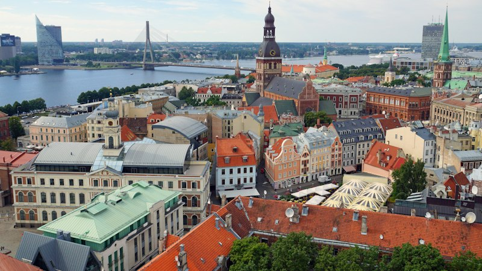
Letonya'da İngilizce programlara genellikle en az B2 düzeyinde İngilizceyle başvurulur.
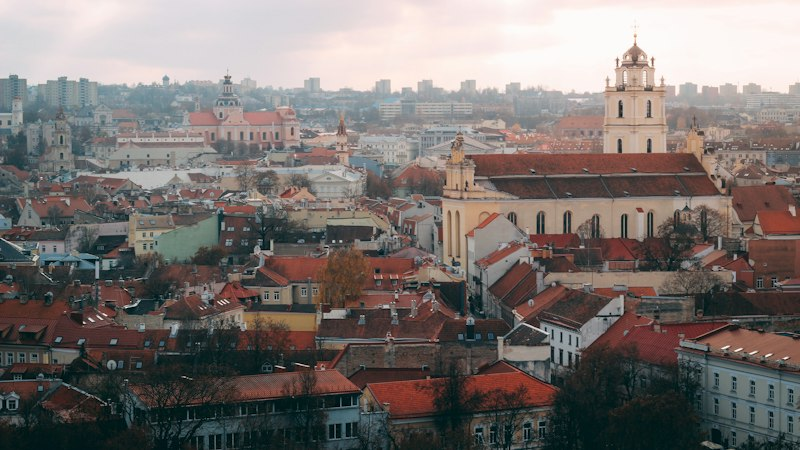
Litvanya'da tıp İngilizce okunabiliyor ve üniversiteler adayları kendi çevrim içi sınavıyla seçiyor.
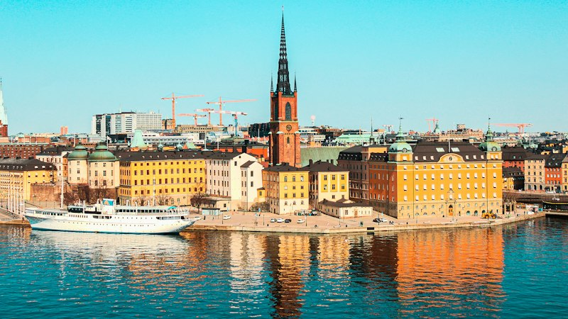
İsveç'te lisans ve yüksek lisans programlarına tek bir portaldan, universityadmissions.se üzerinden başvurulur.
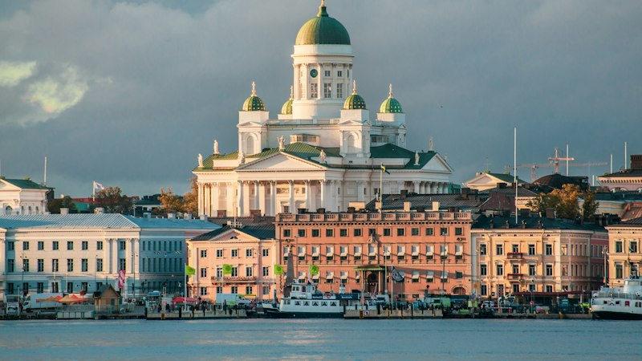
Finlandiya'da İngilizce lisans ve yüksek lisans programlarının çoğuna Ocak'taki ortak başvuruyla (joint application) girilir.
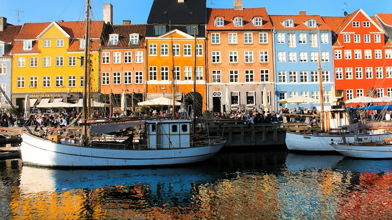
Danimarka'da lisans başvuruları tek bir sistemden, optagelse.dk üzerinden yapılır.
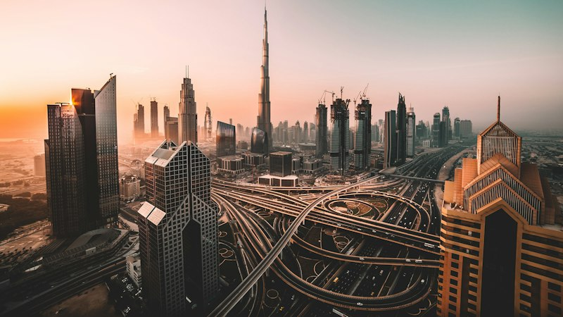
Dubai'de özel kurs ve eğitim merkezleri, 2015 tarihli 50 sayılı Yürütme Konseyi Kararı'na göre KHDA izniyle çalışır.
Asya-Pasifik
Japonya'da akademik yıl çoğu üniversitede Nisan'da başlar; bazı okullar Eylül veya Ekim'de de öğrenci alır.
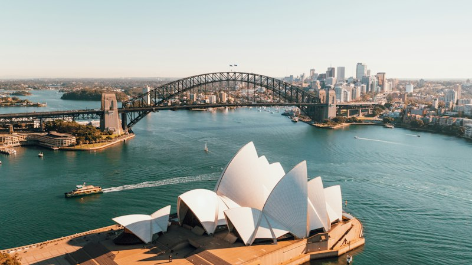
Avustralya'da okumak için Student visa (subclass 500) gerekir.
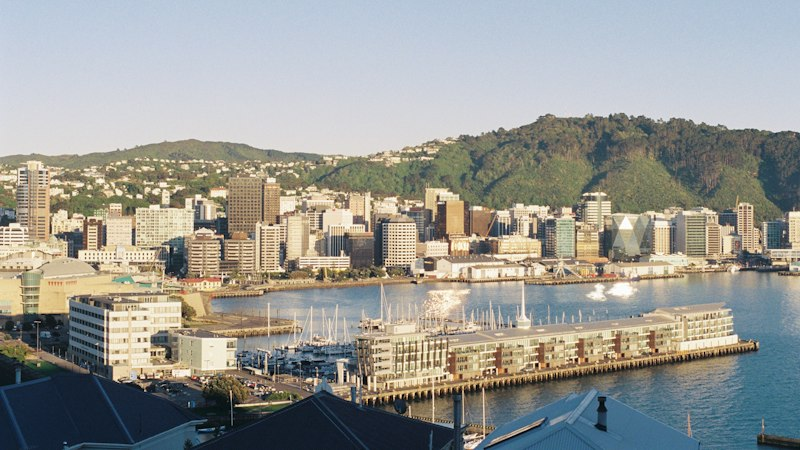
Yeni Zelanda'da sekiz üniversite var: Auckland, Otago, Canterbury, Victoria University of Wellington, Waikato, Massey, Lincoln ve Auckland University of Technology.